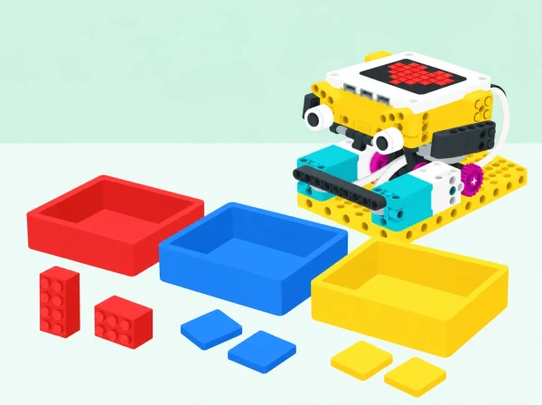

Què pot saber un sensor de color?
🏷️ Residus, consum i sostenibilitat
🌱 Situació, repte i intenció
Un envàs blau pot ser de diversos materials, i un mateix material pot tindre molts colors: la lectura cromàtica no és una identificació del material ni una instrucció de reciclatge.
🎯 Aprenentatges i vocabulari
formular criteris de classificació, relacionar una dada de sensor amb una regla, construir un mecanisme amb motors, provar-lo amb casos variats, calcular resultats sobre un conjunt conegut i comunicar límits i decisions pendents de validació humana.
🧰 Materials i preparació
Prepareu un set SPIKE Prime amb hub, motor(s) angular(s), sensor de color i elements de construcció; un dispositiu amb l’app SPIKE; mostres netes de maons o targetes mates de diversos colors; safates buides; regle o separadors per estabilitzar distàncies; full de registre i calculadora opcional. La il·lustració mostra un prototip conceptual fet amb peces compatibles; l’alumnat ha de construir i provar el seu propi mecanisme amb les peces disponibles, no copiar un muntatge oficial.
El sensor de color de SPIKE pot llegir color, reflectivitat o llum ambiental. La fitxa tècnica del fabricant dona una distància de lectura òptima aproximada de 16 mm, que pot variar amb la mida, el color i la superfície de l’objecte. Abans de classe, comproveu en el set físic la lectura i el mecanisme proposat; no feu dependre una decisió important d’un valor de sensor sense verificar-lo.
Per a una classificació autèntica de residus, consulteu la guia vigent del municipi o centre i useu mostres netes o targetes, mai residus tallants, bruts o desconeguts.
📅 Seqüència didàctica
Auditem un problema sense tocar residus (50 min)
Fase 1 · Activem i prediem
Mostreu fotografies o una llista de materials del mercat o del menjador escolar. En parelles, l’alumnat proposa com els separaria i anota quina informació li falta. Abans de la sessió, el docent contrasta les propostes amb la guia municipal o la informació vigent del centre.
Fase 2 · Explorem i construïm
Compareu dos objectes ficticis de color semblant i parleu de què sabem i què no sabem només mirant-los. Un envàs blau pot estar fet de materials diferents; un material pot tindre colors diversos. La lectura cromàtica no identifica la composició ni determina el contenidor.
Fase 3 · Expliquem i registrem
Cada equip tria dues o tres categories de color per a una maqueta amb maons o targetes. Dibuixeu entrada, regla i possibles eixides. Afegiu una categoria «per revisar» per a lectures desconegudes, i compareu-la amb la informació que caldria consultar per decidir sobre un residu real.
Fase 4 · Apliquem i millorem
Completeu un mapa de dues columnes: «què pot fer el prototip» i «què cal confirmar en la guia local». No cal manipular ni portar residus reals a l’aula.
Fase 5 · Comprovem i reflexionem
Dissenyem i construïm el classificador (50 min)
Fase 1 · Activem i prediem
Dibuixeu el recorregut d’una mostra: entrada, lectura, regla i eixida. Trieu un muntatge segur amb una mostra situada davant del sensor i una comporta motoritzada que puga orientar-la cap a una de dues safates. En una primera versió, la comporta es pot moure a mà.
Fase 2 · Explorem i construïm
Fixeu el sensor en un suport ferm i perpendicular a la mostra. Marqueu una distància estable pròxima a la recomanació tècnica del fabricant, aproximadament 16 mm, i feu una lectura abans de connectar el motor. Useu només peces lleugeres i deixeu espai perquè la mostra no s’encalle.
Fase 3 · Expliquem i registrem
Moveu la comporta manualment per comprovar-ne l’abast. Identifiqueu on podrien quedar atrapats els dits o la mostra i ajusteu l’estructura abans d’automatitzar-la. L’alumnat no ha de copiar el prototip conceptual de la imatge: construirà una solució pròpia amb les peces disponibles.
Fase 4 · Apliquem i millorem
Assenyaleu al diagrama el sensor, l’actuador, les safates i la zona d’aturada segura.
Fase 5 · Comprovem i reflexionem
Programem i calibrem amb mostres conegudes (50 min)
Fase 1 · Activem i prediem
Llegiu maons o targetes mates amb colors que el sensor de SPIKE reconega en el model del centre. Registreu el valor que retorna el programa abans d’afegir una comporta. La lectura exacta pot variar amb la distància, la il·luminació i la superfície.
Fase 2 · Explorem i construïm
En l’app SPIKE, creeu una condició per al color triat. Si es detecta, el motor orienta la comporta cap a una eixida; altrament, la mostra queda en una safata de revisió. Ajusteu els blocs al muntatge real i comproveu que la posició inicial del motor siga repetible.
Fase 3 · Expliquem i registrem
Proveu cada cas almenys tres vegades des de la mateixa posició. Després canvieu només una variable —distància, il·luminació o superfície— i compareu el resultat. Incloeu una mostra fora de les categories; el programa ha de poder respondre «no ho sé».
Fase 4 · Apliquem i millorem
Completeu la taula amb mostra, color esperat, lectura, eixida i excepció. Afegiu un comentari al codi que explique la regla.
Fase 5 · Comprovem i reflexionem
Posem a prova els límits amb casos adversos (50 min)
Fase 1 · Activem i prediem
Creeu vint mostres repetibles amb peces LEGO o targetes, no amb residus reals. Incloeu colors coincidents, variacions de to, blanc i negre, i superfícies mates i brillants. Barregeu l’ordre perquè el programa no puga aprofitar una seqüència coneguda.
Fase 2 · Explorem i construïm
Una persona que no programa la màquina conserva la clau de les categories de prova. L’equip executa les mostres i registra encerts, errors i casos enviats a revisió. Manteniu constants l’orientació i la distància; si les canvieu, marqueu-ho com una prova diferent.
Fase 3 · Expliquem i registrem
Calculeu el percentatge d’encerts sobre el nombre de mostres que el prototip havia de distingir. Compteu a banda les mostres de revisió: no són encerts automàtics. Trieu un fals positiu i un cas ambigu, i decidiu si l’origen probable és la lectura, la regla o el mecanisme.
Fase 4 · Apliquem i millorem
Escriviu un límit que les dades demostren i un risc que encara no s’ha provat. Un resultat amb maons o targetes no valida la classificació de residus reals.
Fase 5 · Comprovem i reflexionem
Millorem i comuniquem una conclusió responsable (50 min)
Fase 1 · Activem i prediem
Reviseu la matriu de proves i trieu una regla o una part mecànica. Escriviu una predicció concreta sobre què hauria de millorar abans de tocar el prototip.
Fase 2 · Explorem i construïm
Canvieu una sola cosa i torneu a provar les mateixes vint mostres en condicions semblants. Si una categoria millora i una altra empitjora, conserveu les dues dades i expliqueu el compromís.
Fase 3 · Expliquem i registrem
Compareu la maqueta amb la guia local: què pot automatitzar-se en una prova de color?, què exigix informació sobre composició i etiquetatge?, quan cal una revisió humana? La guia vigent, i no el prototip, és la referència per a les normes locals.
Fase 4 · Apliquem i millorem
Presenteu un diagrama, la taula de proves, el percentatge, un límit del sensor i una millora pendent. Redacteu la conclusió com «classifica aquestes mostres per color en les condicions provades», no com «sap reciclar qualsevol residu».
Fase 5 · Comprovem i reflexionem
🧪 Evidències i avaluació
Recolliu l’esbós del flux, fotografies del mecanisme sense persones, codi comentat, registres de calibratge i taula comparativa de vint mostres. Observeu si l’alumnat:
- separa una lectura sensorial d’una conclusió sobre material o contenidor;
- construeix una regla que té una eixida per a casos desconeguts;
- repeteix proves en condicions documentades i calcula encerts sobre el total correcte;
- identifica si l’error apareix al sensor, a la lògica o al mecanisme;
- usa la guia local com a referent per a parlar de residus reals.
Es valora la qualitat de les proves i l’explicació dels límits, no una taxa d’encert perfecta. L’equip ha de distingir clarament entre mostra de prova i residu real.
♿ Participació, accessibilitat i seguretat
No manipuleu residus reals ni objectes bruts, tallants, amb líquids o d’origen desconegut. Useu peces lleugeres; manteniu dits fora de la comporta i desconnecteu el motor abans d’ajustar engranatges. Manteniu la màquina a baixa velocitat i sota supervisió. Per a participar, oferiu rols de cartografia, muntatge, programació, lectura de dades i auditoria; es poden donar instruccions perquè una altra persona opere el dispositiu.
Les categories han de tindre pictogrames i formes a més de colors per no dependre només de la visió cromàtica. Es pot presentar la conclusió amb gràfic, text, comunicació augmentativa o demostració sense contacte amb el mecanisme.
🔗 Referents i adaptació
La proposta usa el sensor de color, hub, motors i elements estructurals del set SPIKE Prime. Consulteu la fitxa tècnica oficial del sensor de color i comproveu-ne el funcionament al set del centre. La guia municipal o del centre sobre residus s’ha de consultar de nou abans d’usar l’activitat, perquè el prototip no determina les normes locals ni substitueix una classificació humana.